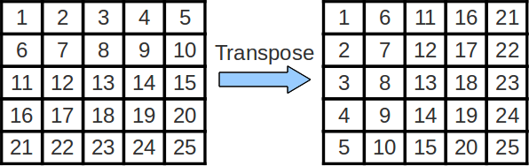

Lab 7
Deadline: EOD (End of Day) Friday, October 30th.
Objectives:
- TSW analyze how memory access patterns determine cache hit rates
- TSW analyze and discover which memory access patterns produce GOOD hit rates
- TSWBAT analyze hit rates for caches and be able to optimize code accesses to produce good hit rates
Setup
Pull the lab 7 files from the lab starter repository with
git pull starter master
For this lab, record your answers to the Tasks questions in the provided exercise1.txt, exercise2.txt, and exercise3.txt files. For numerical answers, write the number instead of spelling it out (e.g. “7” instead of “seven”). The Checkoff Question lines are ignored by the autograder and there for your convenience. The autograder assumes that the original formatting will not be changed, so please don’t add additional lines, switch existing lines, or otherwise modify the current formatting.
Tools for Cache Visualization in Venus
Understanding how caches work is typically one of the hardest tasks for students in 61C.
This exercise will use some cool cache visualization tools to get you more familiar with cache behavior and performance terminology with the help of the file cache.s provided in the starter files. This is not an actual exercise, but more of an explanation on how to use Venus as a cache visualization tool!
At this point, read through cache.s to get a rough idea of what the program does. Make sure you go through what the pseudocode does and what the argument registers hold before you proceed to analyze cache configurations on it.
- The most important thing to understand is the section labeled “PSEUDOCODE” at the top of the file. When you run cache.s, instructions that perform this pseudocode will be executed. Basically, you’ll just either zero out some elements of some array (option 0) or you’ll increment them (option 1).
- Which elements you access is determined by the Step Size (
a1) and how many times you do so is determined by the Rep Count (a2). These two parameters will most directly affect how many cache hits vs. misses will occur. The Option (a3) will also change stuff, and of course the cache parameters themselves will too.
For each of the scenarios below, you’ll be repeating these steps:
- Paste the contents of cache.s into Venus
- In the code for
cache.s, set the appropriate Program Parameters as indicated at the beginning of each scenario (by changing the immediates of the commentedliinstructions inmain) - Simulator–>Cache.
- Set the appropriate Cache Parameters as indicated at the beginning of each scenario.
- As you execute code in Venus, any DATA memory access (load or store) will show up (instruction fetches not shown because instructions are loaded into a separate instruction cache that is not shown in Venus).
The Cache Simulator will show the state of your data cache. If you reset your code, you will also reset the cache hit/miss rate as well!
IMPORTANT: If you run the code all at once, you will get the final state of the cache and hit rate. You will probably benefit the most from setting a breakpoint in the loop wordLoop right before or after each memory access to see exactly where the hits and misses are coming from.
Review - Hit and Miss Policies
The Venus cache simulator currently simulates a write-through, write-allocate cache. Here’s a reminder about the three different cache hit policies you should know about:
- Write-back means that on a write hit, data is written to the cache only, and when this write happens, the dirty bit for the block that was written becomes 1. Writing to the cache is fast, so write latency in write-back caches is usually quite small. However, when a block is evicted from a write-back cache, if the dirty bit is 1, memory must be updated with the contents of that block, as it contains changes that are not yet reflected in memory. This makes write-back caches more difficult to implement in hardware.
- Write-through means that on a write hit, data is written to both the cache and main memory. Writing to the cache is fast, but writing to main memory is slow; this makes write latency in write-through caches slower than in a write-back cache. However, write-through caches mean simpler hardware, since we can assume in write-through caches that memory always has the most up-to-date data.
- Write-around means that in every situation, data is written to main memory only; if we have the block we’re writing in the cache, the valid bit of the block is changed to invalid. Essentially, there is no such thing as a write hit in a write-around cache; a write “hit” does the same thing as a write miss.
There are also two miss policies you should know about:
- Write-allocate means that on a write miss, you pull the block you missed on into the cache. For write-back, write-allocate caches, this means that memory is never written to directly; instead, writes are always to the cache and memory is updated upon eviction.
- No write-allocate means that on a write miss, you do not pull the block you missed on into the cache. Only memory is updated.
Additionally, in this course, we talk about several replacement policies, in order from most useful to least useful (normally):
- LRU - Least recently used—when we decide to evict a cache block to make space, we select the block that has been used farthest back in time of all the blocks.
- Random - When we decide to evict a cache block to make space, we randomly select one of the blocks in the cache to evict.
- MRU - Most recently used—when we decide to evict a cache block to make space, we select the block that has been used most recently of all the blocks.
The important takeaway concerning Venus here: in a write-through cache (like in Venus), even though you are updating memory on writes, because we also write to the cache, we consider writes to blocks we have in the cache to be write hits.
Common question(s):
- Don’t we usually pair write-back with write-allocate and write-through with no write-allocate? Yes, we learned in class that the ordinary pairing of hit policy/miss policy is write-back/write-allocate and write-through/no write-allocate. However, with respect to the cache, write-through and write-back caches behave similarly on hits (both write to the cache), so the hit/miss patterns you see in the Venus cache simulator would be the same even if Venus simulated a write-back cache.
Exercise 1 - A Couple of Memory Access Scenarios
Task: Simulate the following scenarios and record the final cache hit rates with the program in cache.s. Try to reason out what the hit rate will be BEFORE running the code. After running each simulation, make sure you understand WHY you see what you see!
Do not hesitate to ask questions if you feel confused! This is perfectly normal and the staff is there to help you out!
THE FOLLOWING are good questions to ask yourself as you do these exercises (not checkoff questions):
- How big is your cache block?
- How many consecutive accesses (taking into account the step size) fit within a single block?
- How much data fits in the WHOLE cache?
- How far apart in memory are blocks that map to the same set (and could create conflicts)?
- What is your cache’s associativity?
- Where in the cache does a particular block map to?
- When considering why a specific access is a miss or hit: Have you accessed this piece of data before? If so, is it still in the cache or not?
Scenario 1:
Program Parameters: (set these by initializing the a registers in the code)
- Array Size (
a0): 128 (bytes) - Step Size (
a1): 8 - Rep Count (
a2): 4 - Option (
a3): 0
Cache Parameters: (set these in the Cache tab)
- Cache Levels: 1
- Block Size: 8
- Number of Blocks: 4
- Enable?: Should be green
- Placement Policy: Direct Mapped
- Associativity: 1 (Venus won’t let you change this, why?)
- Block Replacement Policy: LRU
Tip: If it’s hard for you to visualize what’s getting pulled into the cache on each memory access just from staring at the code, try getting out some paper and a pencil. Write down what the tag:index:offset breakdown of the 32-bit addresses would be, figure out which memory addresses map to which set in the cache with the index bits, and see if that helps.
Tasks
- What combination of parameters is producing the hit rate you observe? Write your answer in the form “[parameter A], [parameter B]” where the two parameters complete the following response: “Because [parameter A] in bytes is exactly equal to [parameter B] in bytes.” Note: Don’t forget that ‘cache size’ is a valid parameter that you implicitly set by choosing the block size and the # of blocks.
- What is our hit rate if we increase Rep Count arbitrarily? Write your answer as a decimal (e.g. “1.0” if the HR is 100%). (Checkoff Question 1: Why?)
- How could we modify one program parameter to increase our hit rate? Write your answer in the form “[parameter], [value]” where [parameter] is the program parameter you want to change and [value] is the value you want to change it to. Note: We don’t care if we access the same array elements. Just give us a program parameter modification that would increase the hit rate. However, do make sure that your proposed value is valid. (Checkoff Question 2: There are two program parameters you could’ve changed—can you list both?)
Scenario 2:
Program Parameters: (set these by initializing the a registers in the code)
- Array Size (
a0): 256 (bytes) - Step Size (
a1): 2 - Rep Count (
a2): 1 - Option (
a3): 1
Cache Parameters: (set these in the Cache tab)
- Cache Levels: 1
- Block Size: 16
- Number of Blocks: 16
- Enable?: Should be green
- Placement Policy: N-Way Set Associative
- Associativity: 4
- Block Replacement Policy: LRU
Tasks
- How many memory accesses are there per iteration of the inner loop (not the one involving Rep Count)?
- What is the repeating hit/miss pattern? Write your answer in the form “MMHHMH” and so on, where your response is the shortest pattern that gets repeated. (Checkoff Question 3: Why? Now explain the hit rate in terms of the hit/miss pattern.)
- Keeping everything else the same, what does our hit rate approach as Rep Count goes to infinity? Try it out by changing the appropriate program parameter and letting the code run! Write your answer as a decimal. (Checkoff Question 4: Why does this happen?)
You should have noticed that our hit rate was pretty high for this scenario, and your answer to the previous question should give you a good understanding of why. If you are not sure why, consider the size of the array and compare it to the size of the cache. Now, consider the following:
Suppose we have a program that iterates through a very large array (i.e. way bigger than the size of the cache) Rep Count times. During each Rep, we map a different function to the elements of our array (e.g. if Rep Count = 1024, we map 1024 different functions onto each of the array elements, one per Rep). For reference, in this scenario, we just had one function (incrementation) and one Rep.
Checkoff Question 5: Given the program described above, how can we restructure its array accesses to achieve a hit rate like that achieved in this scenario? Assume that each array element is to be modified independently of the others, i.e. it doesn’t matter if Rep k is applied to element arr[i+1] before Rep k is applied to element arr[i], etc.
HINT: You do not want to iterate through the entire array at once because it’s much bigger than your cache. Doing so would reduce the amount of temporal locality your program exhibits, which makes cache hit rate suffer. We want to exhibit more locality so that our caches can take advantage of our predictable behavior. SO, instead, we should try to access **__** of the array at a time and apply all of the **_** to that **__** so we can be completely done with it before moving on, thereby keeping that **_** hot in the cache and not having to circle back to it later on! (The 1st, 3rd, and 4th blanks should be the same. It’s not some vocabulary term you should use to fill them in. It’s more of an idea that you should have.)
Scenario 3:
Program Parameters: (set these by initializing the a registers in the code)
- Array Size (
a0): 128 (bytes) - Step Size (
a1): 1 - Rep Count (
a2): 1 - Option (
a3): 0
Cache Parameters: (set these in the Cache tab)
- Cache Levels: 2
NOTE: Make sure the following parameters are for the L1 cache! (Select L1 in the dropdown right next to the replacement policy)
- Block Size: 8
- Number of Blocks: 8
- Enable?: Should be green
- Placement Policy: Direct Mapped
- Associativity: 1
- Block Replacement Policy: LRU
NOTE: Make sure the following parameters are for the L2 cache! (Select L2 in the dropdown right next to the replacement policy)
- Block Size: 8
- Number of Blocks: 16
- Enable?: Should be green
- Placement Policy: Direct Mapped
- Associativity: 1
- Block Replacement Policy: LRU
Tasks
- What is the hit rate of our L1 cache? Our L2 cache? Overall? Write your answer in the form “[L1 HR], [L2 HR], [Overall HR]” where each hit rate is a decimal rounded to two places.
- How many accesses do we have to the L1 cache total? How many of them are misses? Write your answer in the form “[# of L1 accesses], [# of L1 misses]”.
- How many accesses do we have to the L2 cache total? HINT: Think about how this relates to the L1 cache (think about what the L1 cache has to do in order to make us access the L2 cache)?
- What program parameter would allow us to increase our L2 hit rate, but keep our L1 hit rate the same? (Checkoff Question 6: Why?)
- Do our L1 and L2 hit rates decrease (-), stay the same (=), or increase (+) as we (1) increase the number of blocks in L1, or (2) increase the L1 block size? Write your answer in the form “[1_L1], [1_L2], [2_L1], [2_L2]” (e.g. if I thought L1 will stay the same for both modifications while L2 will decrease for the first and increase for the second, I would answer “=, -, =, +”).
Exercise 2 - Loop Ordering and Matrix Multiplication
If you recall, matrices are 2-dimensional data structures wherein each data element is accessed via two indices. To multiply two matrices, we can simply use 3 nested loops, assuming that matrices A, B, and C are all n-by-n and stored in one-dimensional column-major arrays:
for (int i = 0; i < n; i++)
for (int j = 0; j < n; j++)
for (int k = 0; k < n; k++)
C[i+j*n] += A[i+k*n] * B[k+j*n];
Matrix multiplication operations are at the heart of many linear algebra algorithms, and efficient matrix multiplication is critical for many applications within the applied sciences.
In the above code, note that the loops are ordered i, j, k. If we examine the innermost loop (the one that increments k), we see that it…
- moves through B with stride 1
- moves through A with stride n
- moves through C with stride 0
Remember: To compute the matrix multiplication correctly, the loop order doesn’t matter.
BUT, the order in which we choose to access the elements of the matrices can have a large impact on performance. Caches perform better (more cache hits, fewer cache misses) when memory accesses take advantage of spatial and temporal locality, utilizing blocks already contained within our cache. Optimizing a program’s memory access patterns is essential to obtaining good performance from the memory hierarchy.
Take a glance at matrixMultiply.c. You’ll notice that the file contains multiple implementations of matrix multiply with 3 nested loops.
Task: Think about what the strides are for the nested loops in the other five implementations.
Note that the compilation command in the Makefile uses the ‘-O3’ flag. It is important here that we use the ‘-O3’ flag to turn on compiler optimizations. Compile and run the code with the following command, and then answer the questions below:
make ex2
This will run some matrix multiplications according to the six different implementations in the file, and it will tell you the speed at which each implementation executed the operation. The unit “Gflops/s” reads, “Giga-floating-point-operations per second.” THE BIGGER THE NUMBER THE FASTER IT IS RUNNING!
Tasks
- Which 2 orderings perform best for these 1000-by-1000 matrices? Write your answer in the form “[Ordering1], [Ordering2]” (e.g. “ijk, ikj”). (Checkoff Quesion 1: Why?)
- Which 2 orderings perform the worst? (Checkoff Question 2: Why?)
Checkoff Question 3: How does the way we stride through the matrices with respect to the innermost loop affect performance?
Exercise 3 - Cache Blocking and Matrix Transposition
NOTE: For this exercise, using the hive machines is recommended! If you are in one of the Soda Lab 27- rooms, you can still ssh from the instructional machines into the hive machines. This is because the hive machines have historically run the tests twice as fast.
Matrix Transposition
Sometimes, we wish to swap the rows and columns of a matrix. This operation is called a “transposition” and an efficient implementation can be quite helpful while performing more complicated linear algebra operations. The transpose of matrix A is often denoted as AT.

Cache Blocking
In the above code for matrix multiplication, note that we are striding across the entire A and B matrices to compute a single value of C. As such, we are constantly accessing new values from memory and obtain very little reuse of cached data! We can improve the amount of data reuse in the caches by implementing a technique called cache blocking. More formally, cache blocking is a technique that attempts to reduce the cache miss rate by further improving the temporal and/or spatial locality of memory accesses. In the case of matrix transposition, we consider performing the transposition one block at a time.

Things to note: In the above image, we transpose each submatrix Aij of matrix A into its final location in the output matrix, one submatrix at a time. It is important to note that transposing each individual subsection is equivalent to tranposing the entire matrix.
Since we operate on and finish transposing each submatrix one at a time, we consolidate our memory accesses to that smaller chunk of memory when transposing that particular submatrix, which increases the degree of temporal (and spatial) locality that we exhibit, which makes our cache performance better, which makes our program run faster.
This (if implemented correctly) will result in a substantial improvement in performance. For this lab, you will implement a cache blocking scheme for matrix transposition and analyze its performance.
Your task is to implement cache blocking in the transpose_blocking() function inside transpose.c. You may NOT assume that the matrix width (n) is a multiple of the blocksize. By default, the function does nothing, so the benchmark function will report an error. After you have implemented cache blocking, you can run your code by typing:
make ex3
./transpose <n> <blocksize>
where n, the width of the matrix, and blocksize are parameters that you will specify. You can verify that your code is working by setting n=10000 and blocksize=33. The blocked version should finish significantly faster.
The following section is meant to serve as a guideline for if you have no idea how to start. If you think you know how to use the parameter blocksize, then just jump right in and get started.
Some tips to get started:
Start by looking at the transpose_naive function included in the file. Notice that the index y strides vertically across the WHOLE src matrix in one iteration of the outer loop before resetting to 0. Another way to say this is that the index x only updates after y is done going from 0 all the way to n. This is the behavior which we want to change. We want to step not stride across the array indices.
TL;DR: fill out dst square chunks at a time, where each square chunk is of dimension blocksize by blocksize.
Instead of updating x only when y goes through ALL of 0 through n, we want to jump down to the next row of dst after we stride across the width (horizontal axis) of just a single block. How big is a block? Exactly the number of integers specified by the parameter blocksize.
In addition, we only want to stride vertically through the height (vertical axis) of a block before we move on to the next block. We don’t want to make x stride all the way down n rows of dst before we move on to the next block.
Hint: A standard solution needs 4 (four) for loops.
Finally, since we can’t assume that n is a multiple of blocksize, the final block column for each block row will be a little bit cut-off, i.e. it won’t be a full blocksize by blocksize square. In addition, the final block row will all be truncated. To fix this problem, you can do the exercise assuming that n is a multiple of the blocksize and then add in a special case somewhere to do nothing when your indices reach out of bounds of the array.
Once your code is working, complete the following exercises and record your answers.
Tasks
Record your results and responses to the Checkoff Questions below in exercise3.txt, but note that the file itself is not autograded.
Part 1 - Changing Array Sizes
Fix the blocksize to be 20, and run your code with n equal to 100, 1000, 2000, 5000, and 10000. Record your output in exercise3.txt.
Checkoff Question 1: At what point does cache blocked version of transpose become faster than the non-cache blocked version?
Checkoff Question 2: Why does cache blocking require the matrix to be a certain size before it outperforms the non-cache blocked code?
(Sanity check: the blocked version isn’t faster than the naive version until the matrix size is sufficiently big.)
Part 2 - Changing Blocksize
Fix n to be 10000, and run your code with blocksize equal to 50, 100, 500, 1000, 5000. Record your output in exercise3.txt.
Checkoff Question 3: How does performance change as blocksize increases? Why is this the case?
(Sanity check: as you increase blocksize, the amount of speedup should change in one direction, then change in the other direction.)
Notice that in neither of the last two exercises did we actually know the cache parameters of our machine. We just made the code exhibit a higher degree of locality, and this magically made things go faster! This tells us that caches, regardless of their specific parameters, will always benefit from operating on code which exhibits a high degree of locality.
Checkoff
Please submit to the Lab Autograder assignment.
Note that the autograder is whitespace and case insensitive, but otherwise very simple and thus incapable of recognizing typos or misformatted answers.
The autograder looks for the files exercise1.txt, exercise2.txt, transpose.c, and transpose.h (which you should not change).
All 3 exercises have Checkoff Questions that you can use to guide your discussion with the TA during your checkoff appointment. It is highly recommended to record your responses to the Checkoff Questions (and your performance results) in the provided spaces so you don’t have to dig around for them during the appointment.
We believe this lab is essential to understanding caches, so please take advantage of your TA’s presence when getting checked off! Ask any questions you may have, even if they’re just clarifications. You may learn something you missed your first pass through.